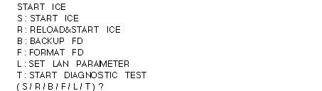

Return to previous page | Return to menu | Go to next page
Some initial settings such as network ID setting and host machine registration are required for connection between the ICE and the host machine. This is explained below.
● ICE and terminal connection
1) Remove the ICE floppy disk.
2) Turn off S8 of the ICE rear dip switch.
(Off when turning to the left side toward the back)
3) Connect the notebook computer and ICE with RS-232C.
(Connect to CRT on E7000 side)
4) Start the terminal software on the PC.
Notes on using Wterm
If there are various settings, press [Control] + [GRAPH] + [S] keys at the same time to complete the connection. If various settings are not made, it is necessary to match the settings of ICE and Wterm. Refer to page 29 of “ICE Emulator User's Manual” for ICE settings.
● IP address (network ID) settings
1) If the connection is successful, the following message will be displayed.

2) When “L” is input when the message is output, the following message is displayed.
3) Enter the address you want to set here. For example,
4) Turn off the power when input is complete.
This completes the address setting.
Host machine registration
1) Connect the network.
2) Set ICE rear dip switch S8 to ON.
(When turned to the right side toward the rear side, it is ON)
3) Turn on the ICE.
4) Run the “telnet” command on the workstation. For example,
5) When “(file name / return)?” Is displayed, return.
6) When the prompt “:” is displayed, enter as follows. Registered
A list of available workstations is displayed.
7) When “PLEASE SELECT NO?” Is displayed, the number you want to register or change
Please select (01-09).
8) Enter the host name (workstation that controls the ICE).
9) Enter the IP address of the host.
10) When all input is completed, the following message is displayed.
11) Press “ctrl” + “]” key to end the “telnet” command.
12) The prompt changes to “telnet>”. Enter “quit” to exit.
13) Turn off the ICE.
14) Insert the floppy disk into ICE and start ICE again.
This completes the ICE settings.